Рецепты ✕ Борщ Еще не знаете, какое первое блюдо сделать на обед? Я хочу показать вам несложный пошаговый способ, как приготовить самый вкусный борщ. Насыщенный, аппетитный и сытный… чудесная идея для всей семьи! 1 час. 30 мин 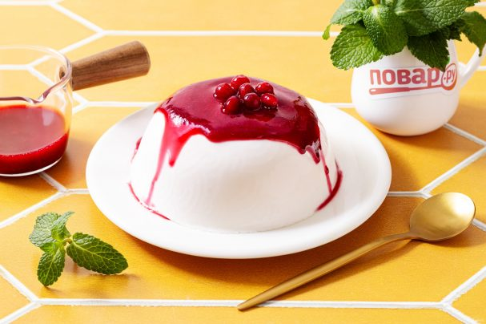 Панакота с агар агаром Панна котта — итальянский десерт-желе на основе жирных сливок. Делюсь рецептом приготовления панна котты с ягодным соусом, где в качестве желирующего компонента будем использоваться агар-агар 2 часа 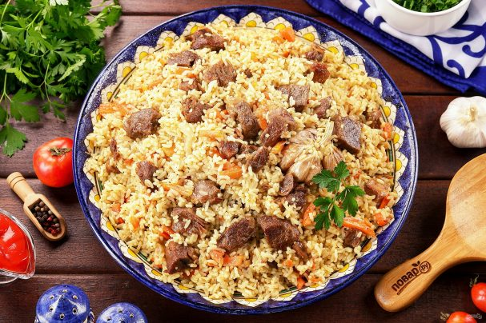 Рассыпчатый плов с говядиной Приготовить рассыпчатый плов с говядиной в домашних условиях несложно. Блюдо получается изумительно вкусное. Порадуйте родных и близких вам людей! 2 часа Суп "Суюк ош" Уйгурский суп на основе мелко нарубленного мяса с домашней лапшой и овощами. Готовится не быстро, но результат того стоит. Получается ну очень вкусно! 2 часа Хачапури по-аджарски настоящий Приготовить хачапури по-аджарски настоящий в домашних условиях несложно. Это может быть и прекрасный сытный завтрак, а может заменить и полноценный ужин. Непременно попробуйте! 2 часа 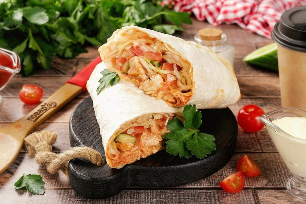 Шаурма в аэрогриле Ищите рецепт домашней шаурмы? Расскажу, как приготовить шаурму в аэрогриле. Сочную, сытную, с большим количеством мяса и овощей. Получается ну очень вкусно! 1 час 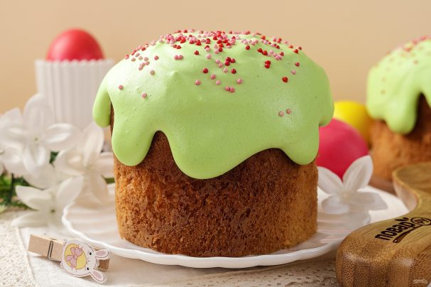 Кулич в аэрогриле Если нет возможности воспользоваться духовкой, то расскажу вам, как можно приготовить кулич в аэрогриле. Очень вкусно! Съедается одним из первых! 3 часа 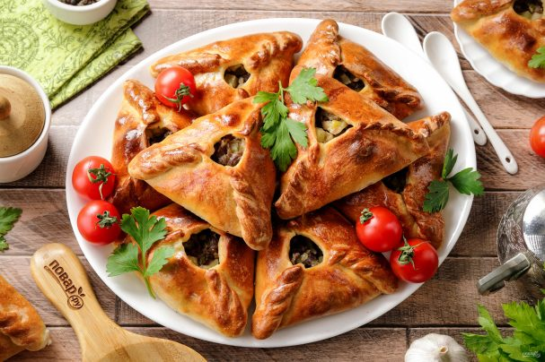 Эчпочмак без дрожжей Приготовить эчпочмак без дрожжей в домашних условиях несложно, в этом рецепте я всё подробно расскажу. Выпечка получается невероятно вкусная, сочная и ароматная, вы будете в восторге! 2 часа 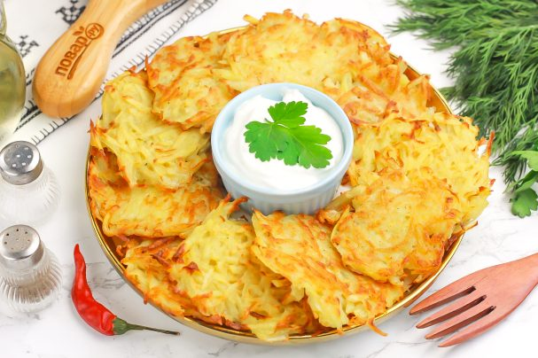 Драники в аэрогриле Аппетитные драники очень легко приготовить в аэрогриле и накормить ими всю свою семью. Подавайте блюдо со сметаной или чесночным соусом, кетчупом, аджикой и т.д. По желанию можно добавить зелень. 30 минут 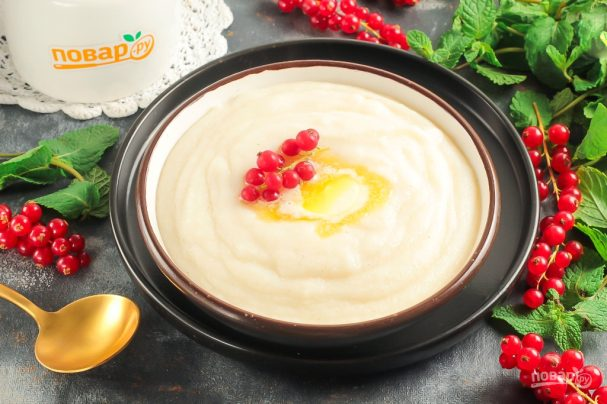 Манная каша на молоке и воде Самый лучший вариант приготовления вкусной манной каши. Она получается не густой, в меру сочной и аппетитной. Подавайте ее с ягодами или фруктами, джемом, вареньем или шоколадом. 15 минут 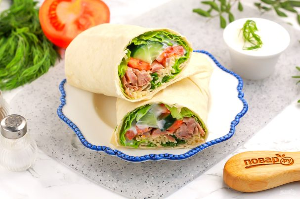 Пшеничный ролл Замечательный перекус из лаваша можно приготовить за пару минут. Для этого используйте мясные или колбасные продукты, свежие овощи, соусы и зелень. По желанию пшеничный ролл можно поджарить на гриле. 10 минут 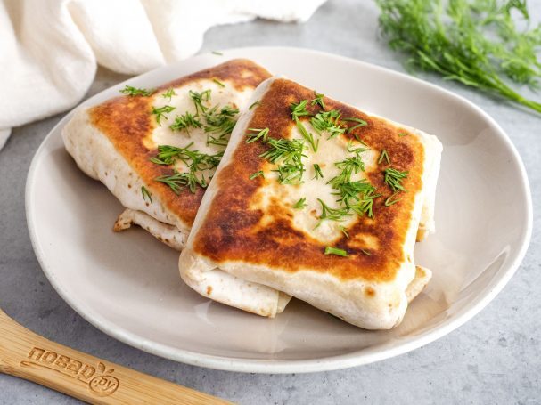 Тортилья с ветчиной и сыром Замечательный перекус из лаваша можно приготовить за пару минут. Для этого используйте мясные или колбасные продукты, свежие овощи, соусы и зелень. По желанию пшеничный ролл можно поджарить на гриле. 30 минут 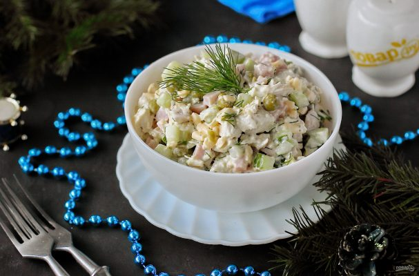 Салат "Старый Новый год" Простой в приготовлении и очень аппетитный салат. Ингредиенты все доступные и наверняка найдутся после встречи Нового года на любой кухне. 30 минут 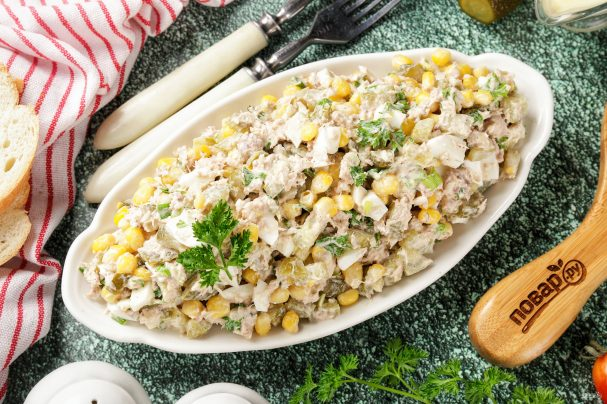 Салат с тунцом, огурцами и кукурузой Простой и очень вкусный салат на скорую руку. В этом салате все ингредиенты прекрасно сочетаются, можно подать и в будни, и к любому праздничному столу. 15 минут 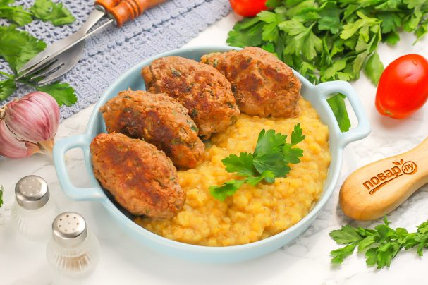 Котлеты по-турецки Ароматные котлеты по-турецки готовятся из говядины с добавлением различных специй, пряностей и зелени. Подаются они с пылу, с жару с любыми гарнирами или несладкой выпечкой, соусами и свежими овощами. 1 час 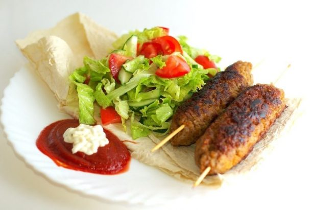 Люля-кебаб на сковороде Давайте сегодня приготовим очень вкусное турецкое блюдо - люля-кебаб. Готовить будем люля-кебаб на сковороде. Это займет совсем немного времени, но принесет много удовольствия! 20 минут 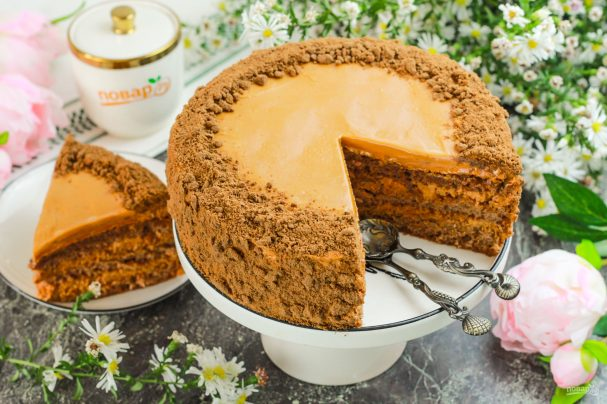 Шоколадный торт с кремом из вареной сгущенки Настоящий праздник вкуса — шоколадный торт с кремом из вареной сгущенки. От кусочка такого десерта не откажется ни один сладкоежка! Готовится торт легко и просто, главное — дать ему пропитаться. 19 часов Оладьи с сыром и колбасой Такие оладьи — это быстрый, вкусный и сытный перекус. Времени на приготовление уходит совсем немного, поэтому можно приготовить оладьи даже на завтрак. Дополните их сметаной. 30 минут